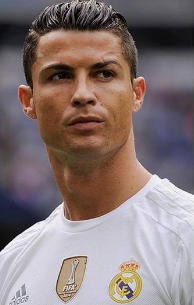
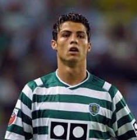
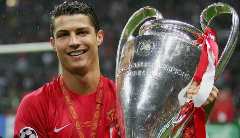

(Cristiano Ronaldo) is considered one of the best players in football history.
He was born in (Madera island) in (Portugal) on 5th February of 1985.

His first team was (Sporting lisbon), He plays with it for 1 year before he gets the attention of the coach (Sir Alex Fergson), who wanted to deal with him to be in his team (Manchester United).

In (Manchester united), and in 6 years he was considered the best young talented player in the world, In his era with (Manchester united), he has titled with UEFA champions legaue for his first time and 3 premier legaues, and titled with the Ballon d'Or in 2008

In 2009, (Real Madrid) has signed with him, and this was the start of a golden era with many titles (4 UEFA champions legaues, 2 spanish legaues, 4 Ballon d'Ors) in 9 years, and become the historical scorer for (Real Madrid) by scoring 450 goals in 438 matches.
In 2018, Juventus has signed with him, and in 3 years with them, he scores 101 goals and has won the Seria A a twice
In 2021, he has back to manchester united for one year
In 2022, and in non predictable descision he has signed for (Al-Nassr), And he has titled with The king Salman cup.
He leads (Portugal national team) to win his first trophy in its history by winning EURO 2016 and win Cup of European nations a twice
And became All-time top goalscorer in men’s international football and of his national team (Portugal)
Portugal National Team: UEFA European Championship (Euro): (2016) & UEFA Nations League: (2019), (2025)
Real Madrid: UEFA Champions League: (2013–14), (2015–16), (2016–17), (2017–18) (4 times) FIFA Club World Cup: (2014), (2016), (2017) (3 times) UEFA Super Cup: (2014), (2016), (2017) (3 times) La Liga (Spanish League): (2011–12), (2016–17) (2 times) Copa del Rey: (2010–11), (2013–14) (2 times) Supercopa de España: (2012), (2017) (2 times)
Manchester United: UEFA Champions League: 2007–08 FIFA Club World Cup: 2008 Premier League: (2006–07), (2007–08), (2008–09) (3 consecutive times) FA Cup: 2003–04 EFL Cup (League Cup): (2005–06), (2008–09) (2 times) FA Community Shield: 2007
Juventus: Serie A: (2018–19), (2019–20) (2 times) Coppa Italia: 2020–21 Supercoppa Italiana: (2018), (2020) (2 times)
Al-Nassr: Saudi Pro League: (2025–26) Arab Club Champions Cup: 2023
Sporting CP: Supertaça Cândido de Oliveira (Portuguese Super Cup): 2002
Major Individual Awards Ballon d'Or: Won 5 times (2008, 2013, 2014, 2016, 2017). FIFA The Best / Best FIFA Men's Player: Won 3 times (2008, 2016, 2017). UEFA Best Player in Europe Award: Won 4 times. European Golden Shoe: Won 4 times (as the top scorer in European domestic leagues). FIFA Puskás Award: Won in 2009 (for his goal against Porto). Globe Soccer Awards: Named Best Player of the Year multiple times (plus the "Player of the Century 2001–2020" award). All-Time Records: Holding the records for the all-time top scorer in the UEFA Champions League and international men's football history, alongside surpassing over 900 official career goals.